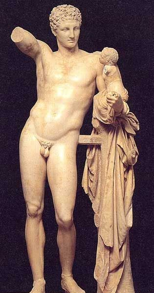

The ancient Roman civilisation began in 753 BC when King Romulus founded the city of Rome (naming it after
himself).
Over the next thousand years, this small city grew into a large empire.
The ancient Romans became one of the most influential civilisations in history, conquering areas in Europe, Africa
and Asia.
Who ruled Rome?
Rome began as a kingdom and was ruled over by kings for 240 years. It then became a republic.
This means that it was run by elected officials called senators and that there was a constitution agreeing how the
republic should be run.
Nearly five hundred years later however, Rome became an empire that was ruled over by an emperor.
Caesar Augustus was the first Roman emperor. Emperors had almost complete control over the whole empire.
When did the Romans invade Britain?
Julius Caesar first invaded Britain in 55 BC. There were several battles between the Roman army and the Celtic
tribes who lived in Britain at the time, but the Romans didn’t have a large enough army and they retreated. The
following year, Julius Caesar attacked Britain again with a larger army. They still didn’t defeat the Celts but
the
Romans promised to leave Britain if the Celts paid tribute to Rome.
It wasn't until Emperor Claudius invaded for a third time nearly a hundred years later in 43 AD that the Romans
finally conquered Britain.
Battles continued for several years afterwards but eventually the Romans gained control and Britain became part of
the Roman Empire.
made the Romans so powerful?
Romans had a very well organised army which allowed them to conquer other countries.
The Roman army was one of the most successful armies in history and far more advanced than any other army at the
time.
How was the Roman army organised?
The Roman army was made up of legions which had nearly 5000 men each. Legions were organised in a very specific
way:
Eight men were put into a group called a tent.
Ten tents were put together to form a century of 80 men. A centurion was in charge of the century.
Six centuries were put together to form a cohort of 480 men.
Ten cohorts were put together to form a legion.
Roman soldiers had to be very tough and highly trained.
They had to walk long distances to battles carrying heavy equipment, such as weapons, tents and food.
What was life for ordinary people in ancient Rome?
Life in ancient Rome depended very much on which social class you belonged to. Roman society was hierarchical,
meaning some people were considered to be much more important than others:
Slaves were at the bottom of the social pyramid. They were the poorest people in society. They had no rights and
had to work constantly.
Next came plebeians. They were the ordinary working people of Rome. Although they were poor, they were allowed to
vote.
Patricians were the aristocracy of Rome. They were rich and came from noble families.
Senators were important people who helped make the laws of Rome.
Two people were chosen every year to help run the empire. These people were called consuls.
The emperor was the most important man in the whole empire. Ultimately, he had absolute power over everyone and
everything in the empire.
Women had few rights in Rome, however rich or poor they were.
Women couldn't vote and were controlled by the paterfamilias the male head of the household.
What were Roman houses like?
If you lived in a city, you probably lived in an insula. This was an apartment building between three and five
stories high.
These were often cramped and badly built. If you were richer, you would live in larger single homes called domus.
These usually had many rooms off an atrium which was a room in the centre of the house with an open roof.
Poor Romans who lived in the countryside would live in shacks or cottages while rich Romans would live in large,
sprawling villas.

HERMES OF OLYMPIA
The god Hermes stands nude with the infant Dionysus held in his arm.
Information
Museum Collection : Archaeological Museum of Olympia
A mantled goddess, usually identified as Hestia (Roman Vesta), stands with one hand raised.
She is modestly clothed in a heavy floor-length robe and veil.
This image is a photo of a plaster cast of the statue in the Ashmolean Museum, Oxford.
Information
Museum Collection : Torlonia Museum (formerly), Rome
Catalogue No. : Rome MT490
Title : Hestia Giustiniani
Type : Statue
Material : Marble
Height : 1.93 metres
Contex: -
Original/ Copy :Copy: Roman copy of Greek bronze statue ca 470 B.C.
Heracles (Roman Hercules) stands nude with the apples of the Hesperides and a knotted
club draped with a lion-skin cape held in his hands.
He is crowned with a wreath of oak-leaves and a fig-leaf covers his groin--a
post-Classical embellishment.
Information
Museum Collection : State Hermitage Museum, Saint Petersburg
The elderly satyr Silenus rides across the sea on the back of an Ichthyocentaur (marine centaur).
The rustic god is depicted as a plump, balding little man.
The marine deity has the upper body of a beardless youth, the lower foreparts of a
horse, and the coiling tail of a serpentine fish.
Information
Museum Collection : Musée du Louvre, Paris
Catalogue No. : Louvre Ma3091
Title : Marine Centaur and Silenus
Type : Statue
Material : Marble
Height : 1.15 metres
Contex: Discovered on Esquilin Mount in Rome
Original/ Copy :Roman copy of a Greek statue from a group by Scopas C4th B.C.
The god Dionysus (Roman Bacchus) is portrayed as a pubescent boy crowned with a wreath of grapes,
and holding a cup of wine in one hand and bunch of grapes in the other.
Information
Museum Collection : State Hermitage Museum, Saint Petersburg
The god Pan sits holding a flute and pine-cone in his hands.
He has the horns and shaggy legs of a goat, and a rather savage visage.
The statue was originally part of a sculpture group depicting the instruction of the
bucolic poet Daphnis.
Information
Museum Collection : Musée du Louvre, Paris
Catalogue No. : Louvre Ma266
Title : Pan
Type : Statue
Material : Marble
Height : 1.58 metres
Contex:-
Original/ Copy : Roman copy of a Greek statue from group by Heliodorus of Rhodes C2nd B.C.